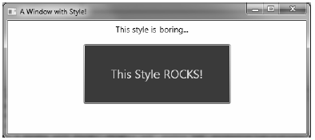
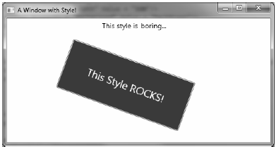
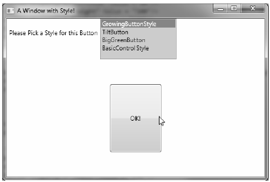

When you are building the UI of a WPF application, it is not uncommon for a family of controls to require a shared look and feel. For example, you may want all button types have the same height, width, background color, and font size for their string content. Though you could handle this by setting each button’s individual properties to identical values, such an approach makes it difficult to implement changes down the road, as you’d need to reset the same set of properties on multiple objects for every change.
Thankfully, WPF offers a simple way to constrain the look and feel of related controls using styles. Simply put, a WPF style is an object that maintains a collection of property/value pairs.
Programmatically speaking, an individual style is represented using the System.Windows.Style class. This class has a property named Setters, which exposes a strongly typed collection of Setter objects. It is the Setter object that allows you to define the property/value pairs.
In addition to the Setters collection, the Style class also defines a few other important members that allow you to incorporate triggers, restrict where a style can be applied, and even create a new style based on an existing style (think of it as “style inheritance“). In particular, be aware of the following members of the Style class:
In almost every case, a Style object will be packaged as an object resource. Like any object resource, you can package it at the window or application level, as well as within a dedicated resource dictionary (this is great, because it makes the Style object easily accessible throughout your application). Now recall that the goal is to define a Style object that fills (at minimum) the Setters collection with a set of property/value pairs.
Create a new WPF application named WpfStyles using Visual Studio 2010. Let’s build a style that captures the basic font characteristics of a control in our application. Open your App.xaml file and define the following named style:
<Application x:Class="WpfStyles.App" xmlns="http://schemas.microsoft.com/winfx/2006/xaml/presentation" xmlns:x="http://schemas.microsoft.com/winfx/2006/xaml" StartupUri="MainWindow.xaml"> <Application.Resources> <Style x:Key ="BasicControlStyle"> <Setter Property = "Control.FontSize" Value ="14"/> <Setter Property = "Control.Height" Value = "40"/> <Setter Property = "Control.Cursor" Value = "Hand"/> </Style> </Application.Resources> </Application>
Notice that our “BasicControlStyle” adds three Setter objects to the internal collection. Now, let’s apply this style to a few controls in our main window. Because this style is an object resource, the controls that wish to use it still need to use the {StaticResource} or {DynamicResource} markup extension to locate the style. When they find the style, they will set the resource item to the identically named Style property. Consider the following <Window> definition:
<Window x:Class="WpfStyles.MainWindow" xmlns="http://schemas.microsoft.com/winfx/2006/xaml/presentation" xmlns:x="http://schemas.microsoft.com/winfx/2006/xaml" Title="A Window with Style!" Height="229" Width="525" WindowStartupLocation="CenterScreen"> <StackPanel> <Label x:Name="lblInfo" Content="This style is boring..." Style="{StaticResource BasicControlStyle}" Width="150"/> <Button x:Name="btnTestButton" Content="Yes, but we are reusing settings!" Style="{StaticResource BasicControlStyle}" Width="250"/> </StackPanel> </Window>
If you run this application, you’ll find that both controls support the same cursor, height, and fontsize.
Here we have a Button and Label that have both opted in to the constraints enforced by our style. Of course, if a control wishes to apply a style and then change some of the defined settings, that’s fine. For example, the Button will now use the Help cursor (rather than the Hand cursor defined in the style):
<Button x:Name="btnTestButton" Content="Yes, but we are reusing settings!" Cursor="Help" Style="{StaticResource BasicControlStyle}" Width="250" />
Styles are processed before the individual property settings of the control using the style; therefore controls can “override” settings on a case-by-case basis.
Currently, our style is defined in such a way that any control can adopt it (and has to do so explicitly by setting the control’s Style property), given that each property is qualified by the Control class. For a program that defines dozens of settings, this would entail a good amount of repeated code. One way to clean this style up a bit is to use the TargetType attribute. When you add this attribute to a Style’s opening element, you can mark exactly once where it can be applied:
<Style x:Key ="BasicControlStyle" TargetType="Control"> <Setter Property = "FontSize" Value ="14"/> <Setter Property = "Height" Value = "40"/> <Setter Property = "Cursor" Value = "Hand"/> </Style>
Note When you are building a style that is using a base class type, you needn’t be concerned if you assign a value to a dependency property not supported by derived types. If the derived type does not support a given dependency property, it is ignored.
This is somewhat helpful, but we still have a style that can apply to any control. The TargetType attribute is more useful when you wish to define a style that can only be applied to a particular type of control. Add the following new style to the application’s resource dictionary:
<Style x:Key ="BigGreenButton" TargetType="Button"> <Setter Property = "FontSize" Value ="20"/> <Setter Property = "Height" Value = "100"/> <Setter Property = "Width" Value = "100"/> <Setter Property = "Background" Value = "DarkGreen"/> <Setter Property = "Foreground" Value = "Yellow"/> </Style>
This style will work only on Button controls (or a sub-class of Button) and if you apply it on an incompatible element, you will get markup and compiler errors. If the Button uses this new style like so:
<Button x:Name="btnTestButton" Content="This Style ROCKS!" Cursor="Help" Style="{StaticResource BigGreenButton}" Width="250" />
you’d see the output like that shown in Figure 30-17.
Figure 30-17 Controls with different styles
You can also build new styles using an existing style, via the BasedOn property. The style you are extending must have been given a proper x:Key in the dictionary, as the derived style will reference it by name using the {StaticResource} markup extension. Here is a new style based on “BigGreenButton”, which rotates the button element by 20 degrees:
<!-- This style is based on BigGreenButton --> <Style x:Key ="TiltButton" TargetType="Button" BasedOn = "{StaticResource BigGreenButton}"> <Setter Property = "Foreground" Value = "White"/> <Setter Property = "RenderTransform"> <Setter.Value> <RotateTransform Angle = "20"/> </Setter.Value> </Setter> </Style>
This time, the output appears as in Figure 30-18.
Figure 30-18 Using a derived style
Assume you need to ensure that all TextBox controls have the same look and feel. Now assume you have defined a style as an application-level resource, so all windows in the program have access to it. While this is a step in the right direction, if you have numerous windows with numerous TextBox controls, you’ll need to set the Style property numerous times!
WPF styles can be implicitly applied to all controls within a given XAML scope. To create such a style, you use the TargetType property but you don’t assign the Style resource an x:Key value. This “unnamed style” now applies to all controls of the correct type. Here is another application-level style that will apply automatically to all TextBox controls in the current application.
<!-- The default style for all text boxes --> <Style TargetType="TextBox"> <Setter Property = "FontSize" Value ="14"/> <Setter Property = "Width" Value = "100"/> <Setter Property = "Height" Value = "30"/> <Setter Property = "BorderThickness" Value = "5"/> <Setter Property = "BorderBrush" Value = "Red"/> <Setter Property = "FontStyle" Value = "Italic"/> </Style>
We can now define any number of TextBox controls and they will automatically get the defined look. If a given TextBox does not want this default look and feel, it can opt out by setting the Style property to {x:Null}. For example, txtTest will get the default unnamed style, while txtTest2 is doing things its own way:
<TextBox x:Name="txtTest"/> <TextBox x:Name="txtTest2" Style="{x:Null}" BorderBrush="Black" BorderThickness="5" Height="60" Width="100" Text="Ha!"/>
WPF styles can also contain triggers, by packaging up Trigger objects within the Triggers collection of the Style object. Using triggers in a style allows you to define certain <Setter> elements in such a way that they will be applied only if a given trigger condition is true. For example, perhaps you want to increase the size of a font when the mouse is over a button. Or maybe you want to make sure that the text box with the current focus is highlighted with a given color. Triggers are very useful for these sorts of situations, in that they allow you to take specific actions when a property changes without the need to author explicit C# code in a code-behind file.
Here is an update to the TextBox style that ensures that when a TextBox has the input focus, it will receive a yellow background:
<!-- The default style for all text boxes --> <Style TargetType="TextBox"> <Setter Property = "FontSize" Value ="14"/> <Setter Property = "Width" Value = "100"/> <Setter Property = "Height" Value = "30"/> <Setter Property = "BorderThickness" Value = "5"/> <Setter Property = "BorderBrush" Value = "Red"/> <Setter Property = "FontStyle" Value = "Italic"/> <!-- The following setter will only be applied when the text box is in focus. --> <Style.Triggers> <Trigger Property = "IsFocused" Value = "True"> <Setter Property = "Background" Value = "Yellow"/> </Trigger> </Style.Triggers> </Style>
If you test this style, you’ll find that as you tab between various TextBox objects, the currently selected TextBox has a bright yellow background (provided it has not opted out by assigning {x:Null} to the Style property).
Property triggers are also very smart, in that when the trigger’s condition is not true, the property automatically receives the default assigned value. Therefore, as soon as a TextBox loses focus, it also automatically becomes the default color without any work on your part. In contrast, event triggers (examined when we looked at WPF animations) do not automatically revert to a previous condition.
Triggers can also be designed in such a way that the defined <Setter> elements will be applied when multiple conditions are true (similar to building an if statement for multiple conditions). Let’s say we want to set the background of a TextBox to Yellow only if it has the active focus and the mouse is hovering within its boundaries. To do so, we can make use of the <MultiTrigger> element to define each condition:
<!-- The default style for all text boxes --> <Style TargetType="TextBox"> <Setter Property = "FontSize" Value ="14"/> <Setter Property = "Width" Value = "100"/> <Setter Property = "Height" Value = "30"/> <Setter Property = "BorderThickness" Value = "5"/> <Setter Property = "BorderBrush" Value = "Red"/> <Setter Property = "FontStyle" Value = "Italic"/> <!-- The following setter will only be applied when the text box is in focus AND the mouse is over the text box. --> <Style.Triggers> <MultiTrigger> <MultiTrigger.Conditions> <Condition Property = "IsFocused" Value = "True"/> <Condition Property = "IsMouseOver" Value = "True"/> </MultiTrigger.Conditions> <Setter Property = "Background" Value = "Yellow"/> </MultiTrigger> </Style.Triggers> </Style>
Styles can also incorporate triggers that kick off an animation sequence. Here is one final style that, when applied to Button controls, will cause the control to grow and shrink in size when the mouse is inside the button’s surface area:
<!-- The growing button style! --> <Style x:Key = "GrowingButtonStyle" TargetType="Button"> <Setter Property = "Height" Value = "40"/> <Setter Property = "Width" Value = "100"/> <Style.Triggers> <Trigger Property = "IsMouseOver" Value = "True"> <Trigger.EnterActions> <BeginStoryboard> <Storyboard TargetProperty = "Height"> <DoubleAnimation From = "40" To = "200" Duration = "0:0:2" AutoReverse="True"/> </Storyboard> </BeginStoryboard> </Trigger.EnterActions> </Trigger> </Style.Triggers> </Style>
Here, our triggers collection is on the lookout for the IsMouseOver property to return true. When this occurs, we define a <Trigger.EnterActions> element to execute a simple storyboard that forces the button to grow to a Height value of 200 (and then return to a Height of 40) over 2 seconds. If you wish to perform other property changes, you could also define a <Trigger.ExitActions> scope to define any custom actions to take when IsMouseOver is false.
Recall that a style can be applied at runtime as well. This can be helpful if you want to let end users choose how their UI looks and feels, or if you need to enforce a look and feel based on security settings (e.g., the “DisableAllButton” style) or what have you.
During this project, you have defined a number of styles, many of which can apply to Button controls. So, let’s retool the UI of our main window to allow the user to pick from some of these styles by selecting names in a ListBox. Based on the user’s selection, we will apply the appropriate style. Here is the new (and final) markup for the <Window> element:
<Window x:Class="WpfStyles.MainWindow" xmlns="http://schemas.microsoft.com/winfx/2006/xaml/presentation" xmlns:x="http://schemas.microsoft.com/winfx/2006/xaml" Height="350" Title="A Window with Style!" Width="525" WindowStartupLocation="CenterScreen"> <DockPanel > <StackPanel Orientation="Horizontal" DockPanel.Dock="Top"> <Label Content="Please Pick a Style for this Button" Height="50"/> <ListBox x:Name ="lstStyles" Height ="80" Width ="150" Background="LightBlue" SelectionChanged ="comboStyles_Changed" /> </StackPanel> <Button x:Name="btnStyle" Height="40" Width="100" Content="OK!"/> </DockPanel> </Window>
The ListBox control (named lstStyles) will be filled dynamically within the window’s constructor like so:
public MainWindow() { InitializeComponent(); // Fill the list box with all the Button // styles. lstStyles.Items.Add("GrowingButtonStyle"); lstStyles.Items.Add("TiltButton"); lstStyles.Items.Add("BigGreenButton"); lstStyles.Items.Add("BasicControlStyle"); }
The final task is to handle the SelectionChanged event in the related code file. Notice in the following code how we are able to extract the current resource by name, using the inherited TryFindResource() method:
private void comboStyles_Changed(object sender, SelectionChangedEventArgs e) { // Get the selected style name from the list box. Style currStyle = (Style) TryFindResource(lstStyles.SelectedValue); if (currStyle != null) { // Set the style of the button type. this.btnStyle.Style = currStyle; } }
When you run this application, you can pick from one of these four button styles on the fly. Figure 30-19 shows our completed application.
Figure 30-19 Controls with different styles
Source Code The WpfStyles project can be found under the Chapter 30 subdirectory.